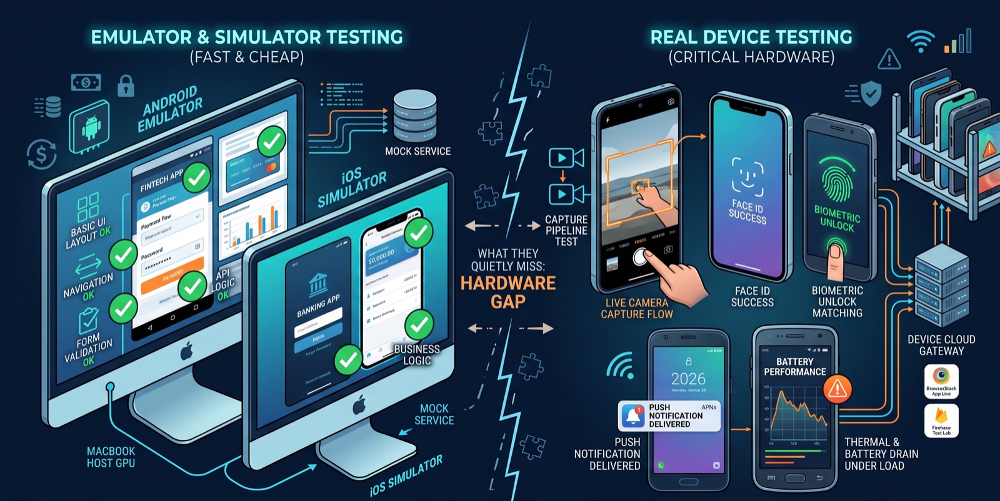

Emulator and Simulator Testing for Mobile Apps: What They Actually Catch, and What They Quietly Miss
A practical look at testing mobile apps on Android emulators and iOS Simulators, and the common misconceptions that let real bugs through.
A team ships a build after a full regression pass on the Android emulator and the iOS Simulator, everything green, and within a day gets reports of crashes on real phones, a broken camera flow, and a push notification that never arrives. Nothing was skipped in the test plan. The problem is that "tested" and "tested on an emulator" are not the same claim, and the gap between them is wider — and more specific — than most QA processes account for.

Emulator and simulator are not the same kind of thing
The words get used interchangeably, but the Android emulator and the iOS Simulator work on fundamentally different principles, and that difference has direct testing consequences. The Android emulator genuinely emulates hardware: it creates a virtual ARM (or x86) processor and translates instructions for it in real time, which is why it can be configured with a specific RAM ceiling or CPU core count that behaves somewhat like a real constrained device, at the cost of being slower than the phone it's modeling.
The iOS Simulator does not emulate hardware at all. It runs your app's code compiled directly for your Mac's own processor, inside a simulated iOS software environment. That's why it's fast — there's no instruction translation happening — but it's also why it is structurally unable to tell you anything about how your app performs on Apple's actual silicon, thermal throttling, or memory pressure under iOS's real memory management. A simulator build passing a performance check is not evidence of anything; it's testing your Mac, not an iPhone.
Misconception: "if it passes on the emulator, it'll pass on the device"
This is the most expensive misconception because it's usually right often enough to feel safe. Emulators and simulators can't reproduce carrier network behavior, real Wi-Fi handoff, background app kill policies on manufacturer-customized Android builds, or actual battery and thermal behavior. A scroll that feels smooth in the emulator because the host machine's GPU is doing the work can visibly stutter on a two-year-old mid-range Android phone. None of this shows up until a real device — ideally a spread of real, sometimes older, devices — runs the same build.
Misconception: "the simulator can test everything except raw speed"
QA teams often treat the iOS Simulator as functionally complete and only performance-incomplete. It isn't. The Simulator cannot access a live camera feed (you can only feed it a photo from the library, not test the actual capture pipeline), it can't produce real motion sensor data from an accelerometer or gyroscope, and it cannot receive genuine push notifications through APNs the way a device does — you can simulate a payload locally, but you're not exercising the real delivery path. Face ID and Touch ID exist in the Simulator only as a menu toggle you trigger yourself; the actual biometric matching logic never runs. Any app with a camera step, a motion-based interaction, real push delivery, or a biometric login flow has a meaningful slice of its behavior that a simulator-only test plan simply cannot see.
A concrete way to split the test plan
Rather than treating "run it on the emulator" as a single test phase, it helps to explicitly assign test types to the environment that can actually validate them:
Emulator / Simulator (fast, cheap, every commit)
- UI layout across screen sizes and OS versions
- Business logic, navigation, form validation
- API contract and mocked network responses
- Basic accessibility checks (labels, contrast)
Real device / device cloud (before merge to release branch)
- Camera capture, biometric login, real push notifications
- Battery, memory, and thermal behavior under load
- Performance on a low/mid-range device, not just flagship
- Anything the app itself may behave differently under
(see security note below)Services like Firebase Test Lab, BrowserStack App Live, and AWS Device Farm exist specifically to make the second column affordable without a physical device shelf, and are worth budgeting for even on a small team.
The overlooked angle: apps behave differently when they detect an emulator
This one catches security-conscious teams off guard. Many apps — anything with fraud prevention, anti-tamper protection, or an ad SDK — actively detect when they're running on an emulator and change their own behavior in response: disabling a feature, refusing to load, or silently degrading. That means a bug you can't reproduce in the emulator might be entirely real on a device, and a feature that "works fine" in the emulator might be running a different code path than the one real users hit. Emulators also typically can't install a build the way users actually get it — through the app store — so the artifact under test isn't always the artifact that ships.
Pitfalls and limits
None of this is an argument to abandon emulators and simulators — they're genuinely the right tool for fast iteration, layout checks across many screen sizes, and most business-logic testing, and running everything on real devices for every commit is slow and expensive. The risk is treating emulator-passing as equivalent to device-passing for the categories above. It's also worth remembering that "real device" testing has its own blind spot: a device farm gives you a specific phone, OS version, and region, not the full fragmentation your actual user base has, so it narrows the gap without closing it.
What to do next
Split your test suite explicitly, as above, and mark which suites are allowed to run emulator-only and which require a real device gate before release. Add camera, biometric, push notification, and low-end performance checks to the real-device list if they aren't already there. If your app has fraud detection, anti-tamper, or ad SDKs, explicitly test on a real device to confirm you're not getting false results from anti-emulation behavior. Finally, if budget allows, get at least one low/mid-range real Android device and one older iPhone into rotation — flagship-only device labs miss the exact performance problems your emulator's fast host GPU is already hiding from you.
Sources
Tim objavi build nakon kompletnog regresionog testiranja na Android emulatoru i iOS Simulatoru, sve zeleno, a u roku od jednog dana stignu prijave o padovima aplikacije na stvarnim telefonima, pokvarenom toku kamere i push notifikaciji koja nikada ne stigne. Ništa iz test plana nije preskočeno. Problem je u tome što „testirano" i „testirano na emulatoru" nisu ista tvrdnja, a jaz između njih je širi — i konkretniji — nego što većina QA procesa uzima u obzir.
Emulator i simulator nisu ista stvar
Ovi izrazi se koriste kao sinonimi, ali Android emulator i iOS Simulator rade na suštinski različitim principima, i ta razlika ima direktne posljedice po testiranje. Android emulator zaista emulira hardver: pravi virtuelni ARM (ili x86) procesor i u realnom vremenu prevodi instrukcije za njega. Zato se može podesiti sa tačno određenim ograničenjem RAM-a ili brojem jezgara procesora, pa se donekle ponaša kao stvaran uređaj sa ograničenim resursima — po cijenu toga da je sporiji od telefona koji oponaša.
iOS Simulator uopšte ne emulira hardver. Pokreće kod vaše aplikacije kompajliran direktno za procesor vašeg Mac-a, unutar simuliranog iOS softverskog okruženja. Zato je brz — nema prevođenja instrukcija — ali je zato i strukturno nesposoban da vam kaže bilo šta o tome kako se aplikacija ponaša na Apple-ovom stvarnom čipu, pri termalnom usporavanju ili pod pritiskom na memoriju u stvarnom iOS upravljanju memorijom. To što build na simulatoru prođe test performansi ne dokazuje ništa; testirate svoj Mac, a ne iPhone.
Zabluda: „ako prođe na emulatoru, proći će i na uređaju"
Ovo je najskuplja zabluda, jer je obično tačna dovoljno često da djeluje sigurno. Emulatori i simulatori ne mogu reprodukovati ponašanje mreže mobilnog operatera, stvarno prebacivanje između Wi-Fi mreža, politike gašenja aplikacija u pozadini na Android verzijama koje su proizvođači prilagodili, niti stvarno ponašanje baterije i temperature. Skrolovanje koje na emulatoru djeluje glatko zato što posao radi GPU host računara može vidno da šteka na Android telefonu srednje klase starom dvije godine. Ništa od ovoga se ne pokaže dok isti build ne pokrene stvaran uređaj — idealno niz stvarnih, ponekad i starijih uređaja.
Zabluda: „simulator može da testira sve osim sirove brzine"
QA timovi često tretiraju iOS Simulator kao funkcionalno kompletan, a nepotpun samo po pitanju performansi. Nije tako. Simulator ne može da pristupi kameri uživo (možete mu dati samo fotografiju iz galerije, a ne testirati stvarni tok snimanja), ne može da proizvede stvarne podatke senzora pokreta iz akcelerometra ili žiroskopa, i ne može da primi prave push notifikacije preko APNs-a na način na koji ih prima uređaj — payload možete simulirati lokalno, ali ne prolazite kroz stvarnu putanju isporuke. Face ID i Touch ID u Simulatoru postoje samo kao opcija u meniju koju sami aktivirate; stvarna logika biometrijskog poređenja se nikada ne izvrši. Svaka aplikacija sa korakom kamere, interakcijom zasnovanom na pokretu, stvarnom isporukom push notifikacija ili biometrijskom prijavom ima značajan dio ponašanja koji test plan zasnovan samo na simulatoru jednostavno ne može da vidi.
Konkretan način da podijelite test plan
Umjesto da „pokreni na emulatoru" tretirate kao jednu fazu testiranja, korisno je vrste testova eksplicitno dodijeliti okruženju koje ih zaista može potvrditi:
Emulator / Simulator (brzo, jeftino, na svakom commitu)
- UI raspored na različitim veličinama ekrana i verzijama OS-a
- Poslovna logika, navigacija, validacija formi
- API ugovor i mockovani mrežni odgovori
- Osnovne provjere pristupačnosti (labele, kontrast)
Stvaran uređaj / device cloud (prije merge-a u release granu)
- Snimanje kamerom, biometrijska prijava, prave push notifikacije
- Ponašanje baterije, memorije i temperature pod opterećenjem
- Performanse na uređaju niže/srednje klase, ne samo na flagship-u
- Sve pod čim se sama aplikacija može ponašati drugačije
(vidi napomenu o bezbjednosti ispod)Servisi poput Firebase Test Lab-a, BrowserStack App Live-a i AWS Device Farm-a postoje upravo zato da druga kolona bude pristupačna bez fizičke police sa uređajima, i vrijedi ih uključiti u budžet čak i u malom timu.
Zanemaren ugao: aplikacije se ponašaju drugačije kada otkriju emulator
Ovo iznenadi čak i timove koji vode računa o bezbjednosti. Mnoge aplikacije — sve koje imaju zaštitu od prevara, zaštitu od neovlašćenih izmjena (anti-tamper) ili SDK za oglase — aktivno otkrivaju kada rade na emulatoru i u skladu s tim mijenjaju sopstveno ponašanje: isključuju neku funkciju, odbijaju da se učitaju ili tiho rade slabije. To znači da greška koju ne možete reprodukovati na emulatoru može biti sasvim stvarna na uređaju, a funkcija koja na emulatoru „radi sasvim dobro" možda izvršava drugu putanju u kodu od one kojom idu stvarni korisnici. Emulatori obično ne mogu ni da instaliraju build na način na koji ga korisnici zaista dobijaju — preko prodavnice aplikacija — pa ono što se testira nije uvijek ono što se objavljuje.
Zamke i ograničenja
Ništa od ovoga nije argument da se odustane od emulatora i simulatora — oni su zaista pravi alat za brzu iteraciju, provjeru rasporeda na mnogo veličina ekrana i većinu testiranja poslovne logike, a pokretanje svega na stvarnim uređajima na svakom commitu je sporo i skupo. Rizik je u tome da se prolaz na emulatoru za gore navedene kategorije tretira kao jednak prolazu na uređaju. Vrijedi imati na umu i da testiranje na „stvarnom uređaju" ima sopstvenu slijepu tačku: device farm vam daje određeni telefon, verziju OS-a i region, a ne punu fragmentaciju koju ima vaša stvarna baza korisnika, pa jaz sužava, ali ga ne zatvara.
Šta dalje
Eksplicitno podijelite svoj skup testova, kao gore, i označite koji skupovi smiju da se pokreću samo na emulatoru, a koji prije objave moraju proći kroz provjeru na stvarnom uređaju. Dodajte provjere kamere, biometrije, push notifikacija i performansi na slabijim uređajima na listu za stvarne uređaje ako već nisu tamo. Ako vaša aplikacija ima detekciju prevara, anti-tamper zaštitu ili SDK-ove za oglase, eksplicitno testirajte na stvarnom uređaju kako biste potvrdili da ne dobijate lažne rezultate zbog ponašanja protiv emulacije. Na kraju, ako budžet dozvoljava, uvedite u rotaciju bar jedan stvaran Android uređaj niže/srednje klase i jedan stariji iPhone — laboratorije sa samo flagship uređajima propuštaju upravo one probleme sa performansama koje brzi GPU host računara vašeg emulatora već krije od vas.